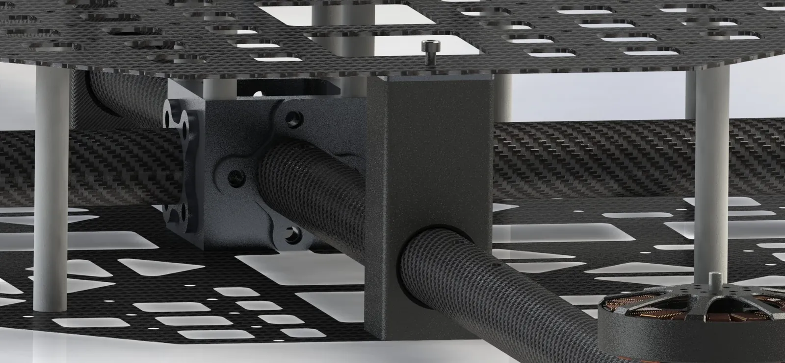
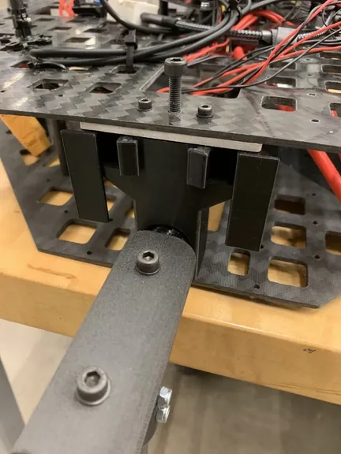
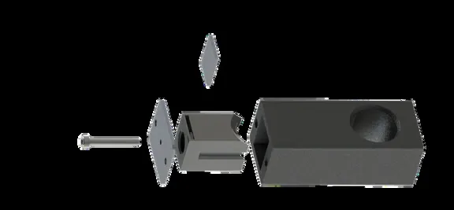
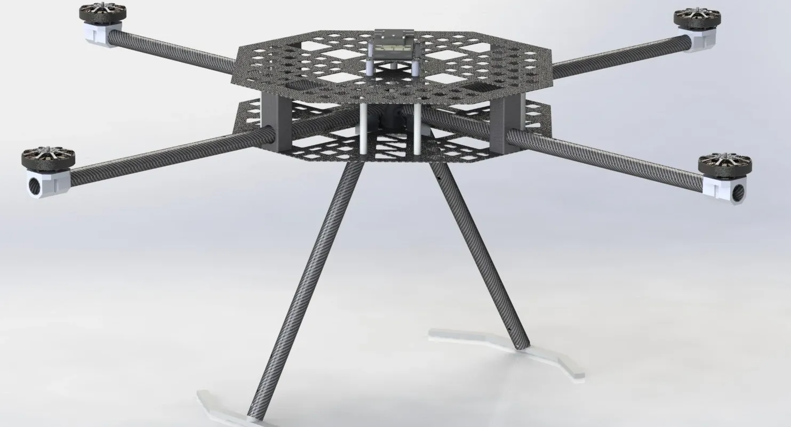
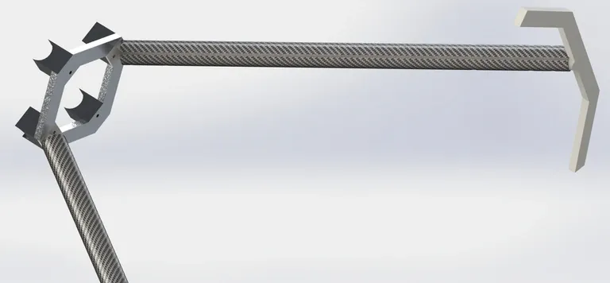
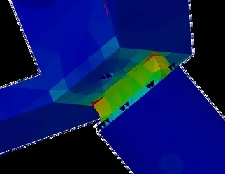
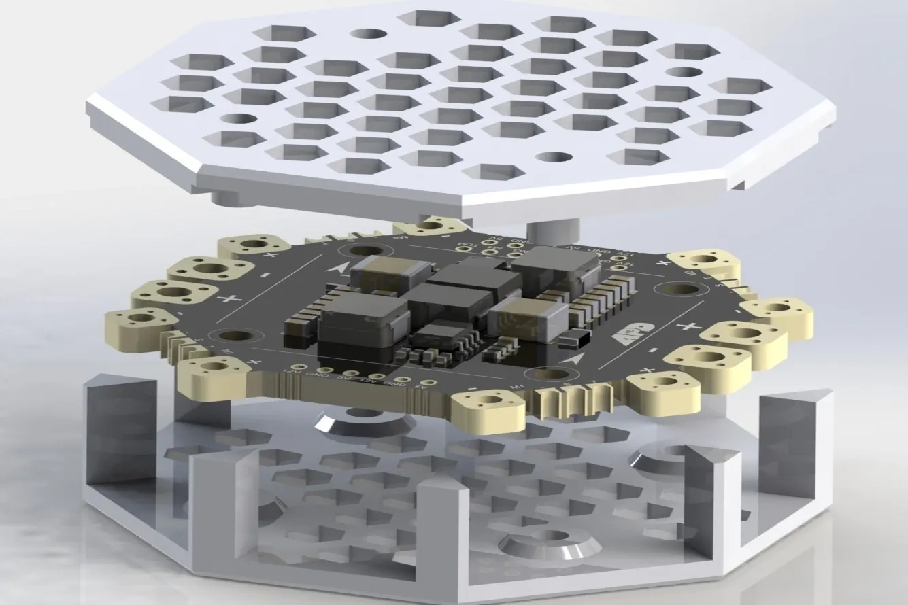
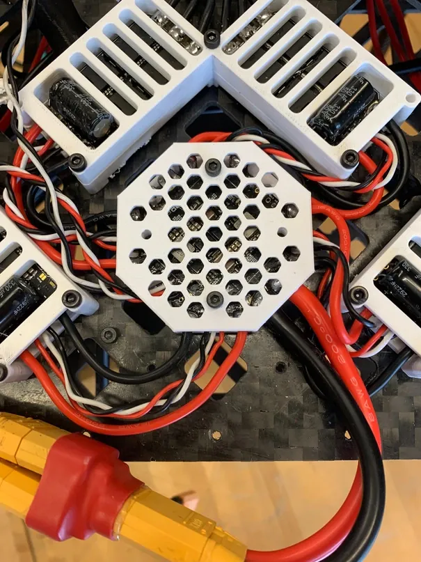

Design team · 2023 to 2024
Drone hardware for WARG
Three parts I designed for the Waterloo Aerial Robotics Group's competition drone, from first sketch to flying hardware.
- My role
- Mechanical design team member
- When
- Sept 2023 to Aug 2024
- Tools
- SOLIDWORKS and PDM, FEA, GD&T, waterjet, 3D printing
- 3
- parts designed and flown
- 56%
- less arm play
- 130°
- landing angle
- 12 g
- board housing


The Waterloo Aerial Robotics Group builds autonomous drones for the Aerial Evolution Association of Canada (AEAC) competition. I spent a year on the mechanical team and designed three parts for the competition drone. All three flew at AEAC.
X-frame arm clamps
The arms of the X-frame had play in them, which showed up as vibration in flight. I designed four clamps that lock each arm down, can be tuned by how far you tighten the screws, and still let the arms come out for transport. The aluminum parts were waterjet cut, drilled and tapped from my GD&T drawings, and the rest printed in carbon-fibre PETG without supports. The design lived in SOLIDWORKS PDM.
- 56%
- less arm play
- 34 g
- per clamp
- < 3 h
- to print, no supports
- 2025
- flew at AEAC




Carbon fibre landing gear
The landing gear had to take repeated landings at different angles and protect the expensive carbon fibre tubes if the drone crashed. I put frangible printed joints between the tubes and the frame, so the joints break first and take the impact. I used FEA to check load distribution and the centre of mass, tuned the print settings of the joints for impact absorption, and drew the GD&T drawing for the machined aluminum.
- 300 g
- total
- 130°
- effective landing angle
- 2024
- flew at AEAC






Power distribution board housing
The electrical team gave me their board and their constraints. The housing snaps onto the frame and is held with screws, keeps fingers away from the points that could short, and has a vent pattern that keeps the board within its rated temperature. I checked the venting with FEA, and designed it to print without supports and go together easily.
- 12 g
- printed in PLA
- < 2 h
- to print, no supports
- 2024
- flew at AEAC



